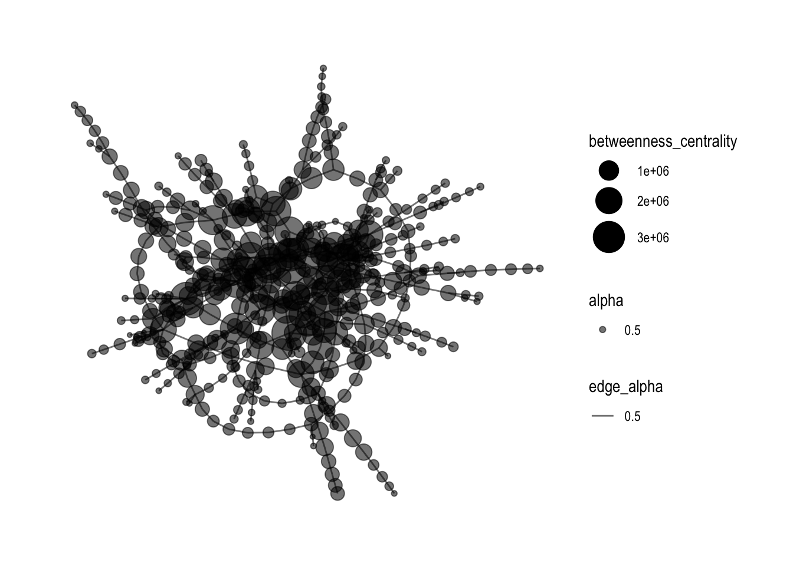

library(stringi)
library(stringr)
library(tidyr)
library(tibble)
library(rvest)
library(corporaexplorer)
library(readr)
Attaching package: 'readr'The following object is masked from 'package:rvest':
guess_encodingLoading package
library(stringi)
library(stringr)
library(tidyr)
library(tibble)
library(rvest)
library(corporaexplorer)
library(readr)
Attaching package: 'readr'The following object is masked from 'package:rvest':
guess_encodingread data
# As this is a corpus which is not organised by date,
# we set `date_based_corpus` to `FALSE`.
# Because we want to organise our exploration around the books in the Bible,
# we pass `"Book"` to the `grouping_variable` argument.
# We specify which metadata columns we want to be displayed in the
# "Document information" tab, using the `columns_doc_info` argument.
KJB <- prepare_data(dataset = bible_df,
date_based_corpus = FALSE,
grouping_variable = "Book",
columns_doc_info = c("Testament", "Book"))Starting.Document data frame done.Corpus is not date based. Calendar data frame skipped.Document term matrix: text processed.Document term matrix: tokenising completed.Document term matrix: word list created.Document term matrix done.Done.Exploring 1,175 documentsLoading required package: shiny(this function allow to search the words in the articles )
In-class exercise
Data import
abstract into two dataframe to rebuild the data
reconstruct the model
extracting the edges
mc3_edges <- as_tibble(mc3_data$links) %>%
distinct() %>%
mutate(source =
as.character(source),
target =
as.character(target),
type = as.character(type)) %>%
group_by(source, target, type) %>%
summarise(weight = n()) %>%
filter(source!= target) %>%
ungroup()`summarise()` has grouped output by 'source', 'target'. You can override using
the `.groups` argument.mc3_nodes <- as_tibble(mc3_data$nodes) %>%
mutate(country = as.character(country),
id = as.character(id),
product_services =
as.character(product_services),
revenue_omu =
as.numeric(as.character(revenue_omu)),
type = as.character(type)) %>%
select(id,country,type, revenue_omu,
product_services)Warning: There was 1 warning in `mutate()`.
ℹ In argument: `revenue_omu = as.numeric(as.character(revenue_omu))`.
Caused by warning:
! NAs introduced by coercionid1<- mc3_edges %>%
select(source) %>%
rename(id =source)
id2 <- mc3_edges %>%
select(target) %>%
rename(id = target)
mc3_node1 <- rbind(id1,id2) %>%
distinct() %>%
left_join(mc3_nodes,
unmatched ="drop")Joining with `by = join_by(id)`mc3_graph %>%
filter(betweenness_centrality >= 100000) %>%
ggraph(layout = "fr") +
geom_edge_link(aes(alpha=0.5)) +
geom_node_point(aes(
size = betweenness_centrality,
colors ="'lightblue",
alpha = 0.5)) +
scale_size_continuous(range =c(1,10)) +
theme_graph()Warning in geom_node_point(aes(size = betweenness_centrality, colors =
"'lightblue", : Ignoring unknown aesthetics: colours